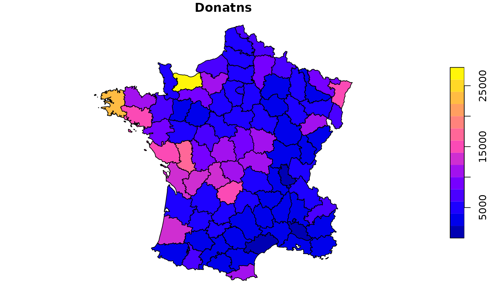

This data and description are taken from the geodaData R package. Classic social science foundational study by Andre-Michel Guerry on crime, suicide, literacy and other “moral statistics” in 1830s France. Data from the R package Guerry (Michael Friendly and Stephane Dray).
Format
An sf data frame with 85 rows, 23 variables, and a geometry column:
- dept
Department ID: Standard numbers for the departments
- Region
Region of France ('N'='North', 'S'='South', 'E'='East', 'W'='West', 'C'='Central'). Corsica is coded as NA.
- Dprtmnt
Department name: Departments are named according to usage in 1830, but without accents. A factor with levels Ain Aisne Allier ... Vosges Yonne
- Crm_prs
Population per Crime against persons.
- Crm_prp
Population per Crime against property.
- Litercy
Percent of military conscripts who can read and write.
- Donatns
Donations to the poor.
- Infants
Population per illegitimate birth.
- Suicids
Population per suicide.
- Maincty
Size of principal city ('1:Sm', '2:Med', '3:Lg'), used as a surrogate for population density. Large refers to the top 10, small to the bottom 10; all the rest are classed Medium.
- Wealth
Per capita tax on personal property. A ranked index based on taxes on personal and movable property per inhabitant.
- Commerc
Commerce and Industry, measured by the rank of the number of patents / population.
- Clergy
Distribution of clergy, measured by the rank of the number of Catholic priests in active service population.
- Crim_prn
Crimes against parents, measured by the rank of the ratio of crimes against parents to all crimes – Average for the years 1825-1830.
- Infntcd
Infanticides per capita. A ranked ratio of number of infanticides to population – Average for the years 1825-1830.
- Dntn_cl
Donations to the clergy. A ranked ratio of the number of bequests and donations inter vivios to population – Average for the years 1815-1824.
- Lottery
Per capita wager on Royal Lottery. Ranked ratio of the proceeds bet on the royal lottery to population — Average for the years 1822-1826.
- Desertn
Military desertion, ratio of number of young soldiers accused of desertion to the force of the military contingent, minus the deficit produced by the insufficiency of available billets – Average of the years 1825-1827.
- Instrct
Instruction. Ranks recorded from Guerry's map of Instruction. Note: this is inversely related to Literacy
- Prsttts
Number of prostitutes registered in Paris from 1816 to 1834, classified by the department of their birth
- Distanc
Distance to Paris (km). Distance of each department centroid to the centroid of the Seine (Paris)
- Area
Area (1000 km^2).
- Pop1831
Population in 1831, in 1000s
Source
Angeville, A. (1836). Essai sur la Statistique de la Population française Paris: F. Doufour.
Guerry, A.-M. (1833). Essai sur la statistique morale de la France Paris: Crochard. English translation: Hugh P. Whitt and Victor W. Reinking, Lewiston, N.Y. : Edwin Mellen Press, 2002.
Parent-Duchatelet, A. (1836). De la prostitution dans la ville de Paris, 3rd ed, 1857, p. 32, 36
Examples
if (requireNamespace("sf", quietly = TRUE)) {
library(sf)
data(guerry)
plot(guerry["Donatns"])
}
#> Linking to GEOS 3.8.0, GDAL 3.0.4, PROJ 6.3.1; sf_use_s2() is TRUE
